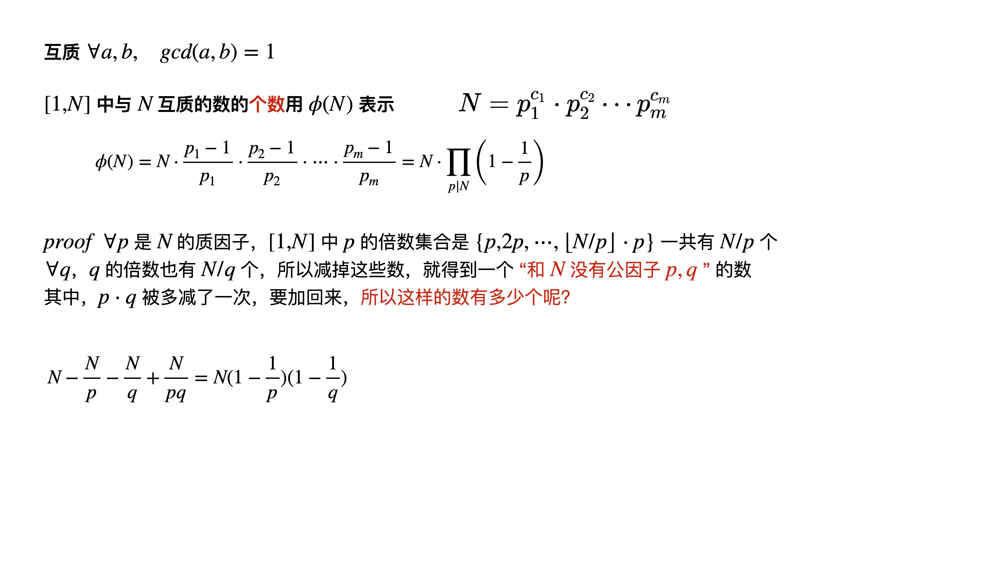
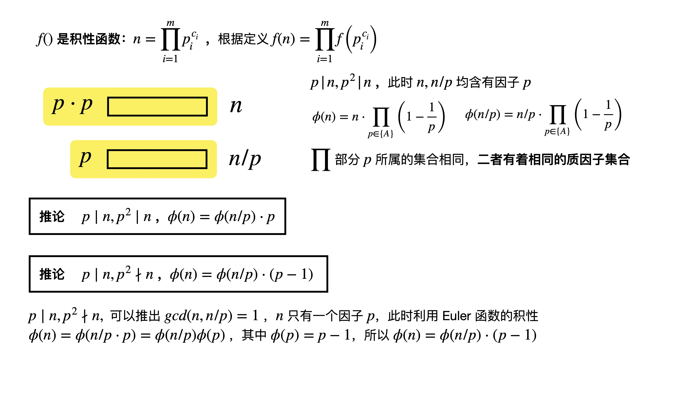
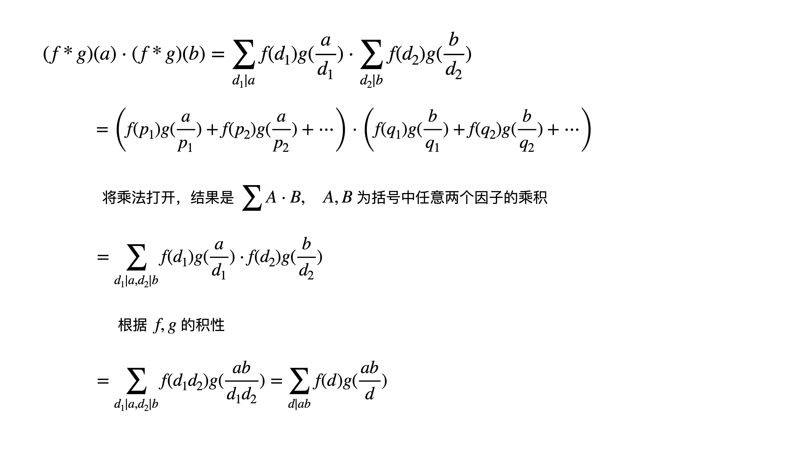

这部分内容介绍了欧拉函数，积性函数

1 2 3 4 5 6 7 8 9 10 11 int phi(int n) { int ans = n; for (int i = 2; i <= sqrt(n); i++) { if (n % i == 0) { ans = ans / i * (i-1); while (n % i == 0) n /= i; } } if (n > 1) ans = ans / n * (n-1); return ans; }
Euler函数性质
gcd ( n , x ) = gcd ( n , n − x ) \textbf{gcd}(n,x) = \textbf{gcd}(n, n-x) gcd ( n , x ) = gcd ( n , n − x ) 1 → n 1\to n 1 → n n n n 不互质 的数的平均值为
( ∑ i i + ( n − i ) 2 ) / k = n / 2 \left(\sum_i \frac{i+(n-i)}{2} \right)/ k = n/2
( i ∑ 2 i + ( n − i ) ) / k = n / 2
与 n n n 互质 的数的平均值也为 n / 2 n/2 n / 2
性质1 ∀ n > 1 , [ 1 , n ] \forall n > 1, [1, n] ∀ n > 1 , [ 1 , n ] n n n n 2 ⋅ ϕ ( n ) \frac{n}{2} \cdot \phi(n) 2 n ⋅ ϕ ( n )
性质2：积性函数 gcd ( a , b ) = 1 , ϕ ( a b ) = ϕ ( a ) ϕ ( b ) \text{gcd}(a, b)=1, \phi(ab) = \phi(a) \phi(b) gcd ( a , b ) = 1 , ϕ ( a b ) = ϕ ( a ) ϕ ( b )
Euler函数的积性

注意到，其中 f ( n m ) = f ( n ) ⋅ f ( m ) f(nm) = f(n) \cdot f(m) f ( n m ) = f ( n ) ⋅ f ( m ) 乘法原理 d ∣ ( n m ) = ( d ∣ n ) ∪ ( d ∣ m ) d \mid (nm) = (d \mid n) \cup (d \mid m) d ∣ ( n m ) = ( d ∣ n ) ∪ ( d ∣ m ) n m nm n m 中有多少个满足条件的约数 d d d d 1 ∣ n d_1 \mid n d 1 ∣ n 个数乘上 满足条件的 d 2 ∣ n d_2 \mid n d 2 ∣ n 的个数
POJ3090
实际上，这个问题，除了 ( 1 , 0 ) , ( 0 , 1 ) , ( 1 , 1 ) (1,0), (0, 1), (1, 1) ( 1 , 0 ) , ( 0 , 1 ) , ( 1 , 1 ) ( x , y ) (x, y) ( x , y ) 1 ⩽ x , y ⩽ N , x ≠ y 1 \leqslant x,y \leqslant N, x \neq y 1 ⩽ x , y ⩽ N , x = y gcd ( x , y ) = 1 \text{gcd}(x, y)=1 gcd ( x , y ) = 1
根据对称性，实际上，对于 2 ⩽ y ⩽ N 2 \leqslant y \leqslant N 2 ⩽ y ⩽ N 1 ⩽ x < y 1 \leqslant x < y 1 ⩽ x < y gcd ( x , y ) = 1 \text{gcd}(x, y)=1 gcd ( x , y ) = 1 ϕ ( y ) \phi (y) ϕ ( y )
ans = 3 + 2 ⋅ ∑ i = 2 N ϕ ( i ) \textbf{ans} = 3 + 2\cdot \sum_{i = 2}^{N} \phi(i) ans = 3 + 2 ⋅ ∑ i = 2 N ϕ ( i )
Eratosthenes筛求Euler函数 ϕ ( i ) = i \phi(i) = i ϕ ( i ) = i i i i j = [ i , 2 i , 3 i , ⋯ , N ] j = [i, 2i, 3i, \cdots, N] j = [ i , 2 i , 3 i , ⋯ , N ] i i i
ϕ ( j ) = ϕ ( j ) ∗ i − 1 i \phi(j) = \phi(j) * \frac{i-1}{i}
ϕ ( j ) = ϕ ( j ) ∗ i i − 1
1 2 3 4 5 6 7 8 9 10 11 12 13 14 15 16 17 18 19 20 21 22 23 24 25 26 27 28 29 30 31 32 33 34 35 36 37 const int maxn = 1000 + 10; int phi[maxn]; int N; void euler(int N) { _rep(i, 2, N) phi[i] = i; _rep(i, 2, N) { if (phi[i] == i) { for (int j = i; j <= N; j += i) phi[j] = phi[j] / i * (i-1); } } } void init memset(phi, 0, sizeof(phi)); } int main freopen("input.txt" , "r" , stdin); int kase; cin >> kase; int T = 0; while (kase--) { init(); scanf("%d" , &N); // then solve euler(N); int sum = 0; _rep(i, 2, N) sum += phi[i]; sum *= 2, sum += 3; printf ("%d %d %d\n" , ++T, N, sum); } }
线性筛法递推求Euler函数
线性筛法的思路是，每个合数仅仅被最小质因子 p p p f l [ ⋯ ] fl[\cdots] f l [ ⋯ ]
∀ i , f l [ i ] = 0 , i \forall i, fl[i] = 0, i ∀ i , f l [ i ] = 0 , i → p r i m e \to prime → p r i m e ∀ i = [ 2 , N ] \forall i = [2, N] ∀ i = [ 2 , N ] i i i 乘上一个当前已得到的素因子 ∀ x ∈ p r i m e \forall x \in prime ∀ x ∈ p r i m e
i × x → f l [ . . . ] { f l [ i ] x i \times x \xrightarrow{fl[...]} \begin{cases}
fl[i] \\
x
\end{cases}
i × x f l [ . . . ] { f l [ i ] x
更新 f l [ i ⋅ x ] fl[i \cdot x] f l [ i ⋅ x ] i ⋅ x i \cdot x i ⋅ x f l [ i ] fl[i] f l [ i ] x x x if f l [ i ] < x \textbf{if} \ fl[i] < x if f l [ i ] < x p r i m e prime p r i m e else , f l [ i ⋅ x ] = x \textbf{else}, \ fl[i \cdot x] = x else , f l [ i ⋅ x ] = x
那么Euler 其实就是在上述算法的基础上每一次标记最小素因子，并且只在第一次标记的时候，记录
ϕ ( i ⋅ p ) = { ϕ ( i ) ⋅ p p ∣ i ϕ ( i ) ⋅ ( p − 1 ) p ∤ i \phi(i \cdot p) = \begin{cases}
\phi(i) \cdot p && p \mid i \\
\phi(i) \cdot (p-1) && p \nmid i
\end{cases}
ϕ ( i ⋅ p ) = { ϕ ( i ) ⋅ p ϕ ( i ) ⋅ ( p − 1 ) p ∣ i p ∤ i
1 2 3 4 5 6 7 8 9 10 11 12 13 14 15 16 17 18 19 20 21 22 23 24 25 26 27 28 29 30 31 32 33 34 35 36 37 38 const int maxn = 1000 + 10; int phi[maxn], fl[maxn]; int N; void euler(int N, vector<int>& prime) { memset(fl, 0, sizeof(fl)); prime.clear(); _rep(i, 2, N) { if (fl[i] == 0) { fl[i] = i, prime.push_back(i); phi[i] = i - 1; } for (const auto& x : prime) { if (fl[i] < x || i * x > N) break ; fl[i*x] = x; phi[i*x] = phi[i] * (i % x ? x - 1 : x); } } } int main freopen("input.txt" , "r" , stdin); int kase; cin >> kase; int T = 0; while (kase--) { scanf("%d" , &N); vector<int> prime; euler(N, prime); int sum = 0; _rep(i, 2, N) sum += phi[i]; sum *= 2, sum += 3; printf ("%d %d %d\n" , ++T, N, sum); } }
f ( n ) f(n) f ( n ) f ( 1 ) = 1 , ∀ x , y ∈ N + f(1)=1, \quad \forall x, y \in \mathbb{N_{+}} f ( 1 ) = 1 , ∀ x , y ∈ N + gcd ( x , y ) = 1 \textbf{gcd}(x,y)=1 gcd ( x , y ) = 1 f ( x y ) = f ( x ) f ( y ) f(xy)=f(x)f(y) f ( x y ) = f ( x ) f ( y ) f ( n ) f(n) f ( n ) 积性函数
f ( n ) f(n) f ( n ) ∀ x , y ∈ N + \forall x, y \in \mathbb{N_{+}} ∀ x , y ∈ N + f ( x y ) = f ( x ) f ( y ) f(xy)=f(x)f(y) f ( x y ) = f ( x ) f ( y ) f ( n ) f(n) f ( n ) 完全积性函数
单位函数
ϵ ( n ) = { 1 n = 1 0 otherwise \epsilon(n) = \begin{cases}
1 && n = 1 \\
0 && \text{otherwise}
\end{cases}
ϵ ( n ) = { 1 0 n = 1 otherwise
幂函数 Id k ( n ) = n k \textbf{Id}_k(n) = n^k Id k ( n ) = n k 完全积性 k = 1 , Id ( n ) = n k=1, \textbf{Id}(n) = n k = 1 , Id ( n ) = n k = 0 , 1 ( n ) k=0, \textbf{1}(n) k = 0 , 1 ( n ) 1 1 1
除数函数
σ k ( n ) = ∑ d ∣ n d k \sigma_k(n) = \sum_{d \mid n} d^k
σ k ( n ) = d ∣ n ∑ d k
k = 1 , σ ( n ) = ∑ d ∣ n d k = 1, \sigma(n) = \sum_{d \mid n} d k = 1 , σ ( n ) = ∑ d ∣ n d 为因素和函数 k = 0 , σ 0 ( n ) = ∑ d ∣ n k = 0, \sigma_0(n) = \sum_{d \mid n} k = 0 , σ 0 ( n ) = ∑ d ∣ n 为 n n n 的因素的个数
莫比乌斯函数
μ ( n ) = { 1 n = 1 0 n 含有平方因子 , ∃ d > 1 , d 2 ∣ n ( − 1 ) k k 为 n 的本质不同质因子的个数 \mu(n) = \begin{cases}
1 && n = 1 \\
0 && n \textbf{含有平方因子}, \exists d > 1, d^2 | n \\
(-1)^{k} && k \text{ 为 } n \ \textbf{的本质不同质因子的个数}
\end{cases}
μ ( n ) = ⎩ ⎪ ⎨ ⎪ ⎧ 1 0 ( − 1 ) k n = 1 n 含有平方因子 , ∃ d > 1 , d 2 ∣ n k 为 n 的本质不同质因子的个数
详细解释如下n = ∏ i = 1 k p i c i n = \prod_{i = 1}^{k} p_i^{c_i} n = ∏ i = 1 k p i c i
n ≠ 1 n \neq 1 n = 1
存在 i ∈ [ 1 , k ] , c i > 1 , μ ( n ) = 0 i \in [1, k], c_i > 1, \mu(n)=0 i ∈ [ 1 , k ] , c i > 1 , μ ( n ) = 0 > 1 , μ ( n ) = 0 >1, \mu(n)=0 > 1 , μ ( n ) = 0
当任意的 i ∈ [ 1 , k ] i \in [1, k] i ∈ [ 1 , k ] c i = 1 c_i = 1 c i = 1 μ ( n ) = ( − 1 ) k \mu(n) = (-1)^k μ ( n ) = ( − 1 ) k n = ∏ i = 1 k p i n = \prod_{i=1}^{k} p_i n = ∏ i = 1 k p i n = p 1 p 2 ⋯ p m n = p_1p_2 \cdots p_m n = p 1 p 2 ⋯ p m k k k μ ( n ) = ( − 1 ) k \mu(n) = (-1)^k μ ( n ) = ( − 1 ) k
( f ∗ g ) ( n ) = ∑ d ∣ n f ( d ) g ( n d ) (f * g)(n) = \sum_{d \mid n} f(d)g(\frac{n}{d})
( f ∗ g ) ( n ) = d ∣ n ∑ f ( d ) g ( d n )
其中 f , g f, g f , g ，一般来说具有积性

利用 dirichlet卷积 ，可以得到一些数论函数的关系
除数函数与幂函数
( f ∗ 1 ) ( n ) = ∑ d ∣ n f ( n ) 1 ( n d ) = ∑ d ∣ n f ( n ) (f*\textbf{1})(n) = \sum_{d\mid n}f(n)\textbf{1}(\frac{n}{d}) = \sum_{d\mid n} f(n)
( f ∗ 1 ) ( n ) = d ∣ n ∑ f ( n ) 1 ( d n ) = d ∣ n ∑ f ( n )
所以有
( Id k ∗ 1 ) ( n ) = ∑ d ∣ n Id k ( d ) = ∑ d ∣ n d k ⟹ Id k ∗ 1 = σ k (\textbf{Id}_{k}*\textbf{1})(n)= \sum_{d\mid n} \text{Id}_{k}(d) = \sum_{d\mid n} d^k \Longrightarrow \textbf{Id}_{k} * \textbf{1} = \sigma_k
( Id k ∗ 1 ) ( n ) = d ∣ n ∑ Id k ( d ) = d ∣ n ∑ d k ⟹ Id k ∗ 1 = σ k
Euler函数与恒等函数
( ϕ ∗ 1 ) ( n ) = ∑ d ∣ n ϕ ( d ) (\phi * \textbf{1})(n) = \sum_{d \mid n} \phi(d)
( ϕ ∗ 1 ) ( n ) = d ∣ n ∑ ϕ ( d )
之前证明过 rhs = n \textbf{rhs} = n rhs = n
ϕ ∗ 1 = Id \phi * \textbf{1} = \text{Id}
ϕ ∗ 1 = Id
ϵ = μ ∗ 1 ⟹ ϵ ( n ) = ∑ d ∣ n μ ( d ) 1 ( n d ) = ∑ d ∣ n μ ( d ) \epsilon = \mu * \textbf{1} \Longrightarrow \epsilon(n) = \sum_{d \mid n} \mu (d)\textbf{1}(\frac{n}{d}) = \sum_{d \mid n} \mu (d)
ϵ = μ ∗ 1 ⟹ ϵ ( n ) = d ∣ n ∑ μ ( d ) 1 ( d n ) = d ∣ n ∑ μ ( d )
交换律
结合律
( f ∗ g ) ∗ h = f ∗ ( g ∗ h ) (f * g) * h = f * (g * h) ( f ∗ g ) ∗ h = f ∗ ( g ∗ h ) proof ( ( f ∗ g ) ∗ h ) ( n ) = ∑ x y = n ( f ∗ g ) ( x ) ⋅ h ( y ) = ∑ x y = n ( ∑ u v = x f ( u ) g ( v ) ) ⋅ h ( y ) = ∑ x y = n ( ∑ u v = x f ( u ) g ( v ) h ( y ) ) \begin{gathered}
\left( (f*g) * h \right)(n) = \sum_{xy=n} (f*g)(x) \cdot h(y) = \\
\sum_{xy = n} \left(\sum_{uv = x}f(u)g(v) \right) \cdot h(y) = \sum_{xy=n} \left( \sum_{uv=x} f(u)g(v)h(y) \right)
\end{gathered}
( ( f ∗ g ) ∗ h ) ( n ) = x y = n ∑ ( f ∗ g ) ( x ) ⋅ h ( y ) = x y = n ∑ ( u v = x ∑ f ( u ) g ( v ) ) ⋅ h ( y ) = x y = n ∑ ( u v = x ∑ f ( u ) g ( v ) h ( y ) )
注意到 u v y = n uvy=n u v y = n rhs = ∑ u v y = n f ( u ) g ( v ) h ( y ) → u ↔ x , v ↔ u , y ↔ v ∑ x u v = n f ( x ) g ( u ) h ( v ) \textbf{rhs}=\sum_{uvy=n}f(u)g(v)h(y) \xrightarrow{u \leftrightarrow x, v \leftrightarrow u, y \leftrightarrow v} \sum_{xuv=n}f(x)g(u)h(v)
rhs = u v y = n ∑ f ( u ) g ( v ) h ( y ) u ↔ x , v ↔ u , y ↔ v x u v = n ∑ f ( x ) g ( u ) h ( v )
let u v = y \textbf{let} \ uv = y let u v = y ∑ x y = n ( ∑ u v = y f ( x ) g ( u ) h ( v ) ) = ∑ x y = n ( f ( x ) ⋅ ∑ u v = y g ( u ) h ( v ) ) = ∑ x y = n f ( x ) ⋅ ( g ∗ h ) ( y ) = ( f ∗ ( g ∗ h ) ) ( n ) \begin{gathered}
\sum_{xy=n}\left( \sum_{uv=y}f(x)g(u)h(v)\right)= \sum_{xy=n} \left(f(x) \cdot \sum_{uv=y}g(u)h(v) \right) = \\
\sum_{xy=n} f(x) \cdot (g * h)(y) = (f * (g * h))(n)
\end{gathered}
x y = n ∑ ( u v = y ∑ f ( x ) g ( u ) h ( v ) ) = x y = n ∑ ( f ( x ) ⋅ u v = y ∑ g ( u ) h ( v ) ) = x y = n ∑ f ( x ) ⋅ ( g ∗ h ) ( y ) = ( f ∗ ( g ∗ h ) ) ( n )
函数加法分配律
单位元 是 ϵ \epsilon ϵ
proof ( ϵ ∗ f ) ( n ) = ∑ d ∣ n ϵ ( d ) f ( n d ) → d = 1 , ϵ ≠ 0 = f ( n ) (\epsilon * f)(n) = \sum_{d \mid n} \epsilon(d) f(\frac{n}{d}) \xrightarrow{d = 1, \epsilon \neq 0} = f(n)
( ϵ ∗ f ) ( n ) = d ∣ n ∑ ϵ ( d ) f ( d n ) d = 1 , ϵ = 0 = f ( n )
逆元
假设 f ∗ g = ϵ f * g = \epsilon f ∗ g = ϵ g g g f f f
逆元的求解
( f ∗ f − 1 ) ( 1 ) = ∑ d ∣ 1 f ( d ) f − 1 ( 1 d ) = f ( 1 ) f − 1 ( 1 ) = 1 → f − 1 = 1 f ( 1 ) (f * f^{-1})(1) = \sum_{d \mid 1} f(d)f^{-1}(\frac{1}{d}) = f(1)f^{-1}(1) = 1 \rightarrow f^{-1} = \frac{1}{f(1)}
( f ∗ f − 1 ) ( 1 ) = d ∣ 1 ∑ f ( d ) f − 1 ( d 1 ) = f ( 1 ) f − 1 ( 1 ) = 1 → f − 1 = f ( 1 ) 1
所以必要条件是 f ( 1 ) ≠ 0 f(1) \neq 0 f ( 1 ) = 0
ϵ ( 2 ) = 0 = ( f ∗ f − 1 ) ( 2 ) = ∑ d ∣ 2 f ( d ) f − 1 ( 2 d ) = f ( 1 ) f − 1 ( 2 ) + f ( 2 ) f − 1 ( 1 ) f − 1 ( 2 ) = − f ( 2 ) f − 1 ( 1 ) f ( 1 ) \begin{gathered}
\epsilon(2) = 0 = (f * f^{-1})(2) = \sum_{d \mid 2} f(d)f^{-1}(\frac{2}{d}) = f(1)f^{-1}(2) + f(2)f^{-1}(1) \\
f^{-1}(2) = - \frac{f(2)f^{-1}(1)}{f(1)}
\end{gathered}
ϵ ( 2 ) = 0 = ( f ∗ f − 1 ) ( 2 ) = d ∣ 2 ∑ f ( d ) f − 1 ( d 2 ) = f ( 1 ) f − 1 ( 2 ) + f ( 2 ) f − 1 ( 1 ) f − 1 ( 2 ) = − f ( 1 ) f ( 2 ) f − 1 ( 1 )
同理可推出逆元的表达式
g ( n ) = { 1 f ( n ) n = 1 − 1 f ( 1 ) ∑ d ∣ n , d > 1 f ( d ) g ( n d ) otherwise g(n) = \begin{cases}
\frac{1}{f(n)} && n = 1 \\
-\frac{1}{f(1)} \sum_{d \mid n, d > 1}f(d)g(\frac{n}{d}) && \text{otherwise}
\end{cases}
g ( n ) = { f ( n ) 1 − f ( 1 ) 1 ∑ d ∣ n , d > 1 f ( d ) g ( d n ) n = 1 otherwise
proof
n = 1 , ( f ∗ g ) ( n ) = ∑ d ∣ 1 f ( d ) g ( 1 d ) = f ( 1 ) g ( 1 ) = 1 n = 1, (f * g)(n) = \sum_{d \mid 1} f(d)g(\frac{1}{d}) = f(1)g(1) = 1 n = 1 , ( f ∗ g ) ( n ) = ∑ d ∣ 1 f ( d ) g ( d 1 ) = f ( 1 ) g ( 1 ) = 1 n > 1 n > 1 n > 1 ( f ∗ g ) ( n ) = ∑ d ∣ n f ( d ) g ( n d ) = f ( 1 ) g ( n ) + ∑ d ∣ n , d > 1 f ( d ) g ( n d ) = − f ( 1 ) f ( 1 ) ∑ d ∣ n , d > 1 f ( d ) g ( n d ) + ∑ d ∣ n , d > 1 f ( d ) g ( n d ) = 0 \begin{gathered}
(f * g)(n) = \sum_{d \mid n} f(d)g\left(\frac{n}{d} \right) = f(1)g(n) + \sum_{d\mid n, d > 1}f(d)g\left( \frac{n}{d} \right) \\
= -\frac{f(1)}{f(1)} \sum_{d \mid n, d > 1} f(d)g\left( \frac{n}{d} \right) + \sum_{d \mid n, d > 1} f(d)g \left(\frac{n}{d} \right) = 0
\end{gathered}
( f ∗ g ) ( n ) = d ∣ n ∑ f ( d ) g ( d n ) = f ( 1 ) g ( n ) + d ∣ n , d > 1 ∑ f ( d ) g ( d n ) = − f ( 1 ) f ( 1 ) d ∣ n , d > 1 ∑ f ( d ) g ( d n ) + d ∣ n , d > 1 ∑ f ( d ) g ( d n ) = 0
积性函数必然存在逆元，且逆元仍是积性函数，因为 f ( 1 ) = 1 ≠ 0 f(1) = 1 \neq 0 f ( 1 ) = 1 = 0
f − 1 ( n ) = { 1 f ( n ) n = 1 − 1 f ( 1 ) ∑ d ∣ n , d > 1 f ( d ) f − 1 ( n d ) otherwise f^{-1}(n) = \begin{cases}
\frac{1}{f(n)} && n = 1 \\
-\frac{1}{f(1)} \sum_{d \mid n, d > 1}f(d)f^{-1}(\frac{n}{d}) && \text{otherwise}
\end{cases}
f − 1 ( n ) = { f ( n ) 1 − f ( 1 ) 1 ∑ d ∣ n , d > 1 f ( d ) f − 1 ( d n ) n = 1 otherwise
f − 1 ( 1 ) = 1 f^{-1}(1)=1 f − 1 ( 1 ) = 1 a a a f − 1 ( a ) f − 1 ( 1 ) = f − 1 ( a ) = f − 1 ( a ⋅ 1 ) f^{-1}(a)f^{-1}(1) = f^{-1}(a) = f^{-1}(a \cdot 1) f − 1 ( a ) f − 1 ( 1 ) = f − 1 ( a ) = f − 1 ( a ⋅ 1 )
 微信
微信 支付宝
支付宝